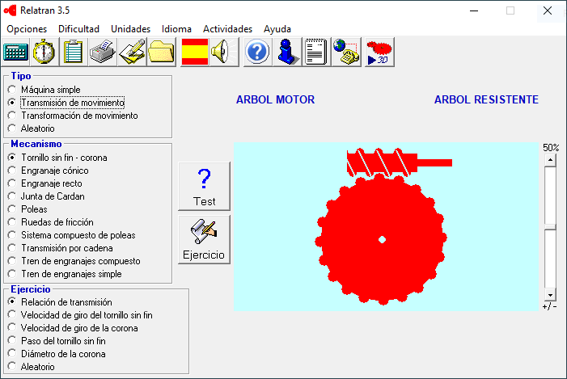
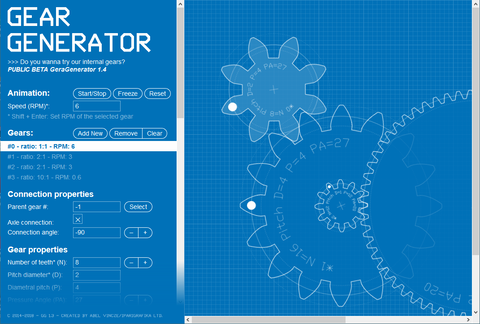

Recursos per a la mecànica¶
PushMepullMe 2D¶
Al lloc web de Gennaro Senatore <https://www.gennarenatore.com/downloads/> `__ Podem trobar aquesta eina que us permeti jugar per empènyer i estirar diferents estructures. La sol·licitud mostra visualment els esforços interns de l'estructura enviats a les forces externes que apliquem amb el ratolí.
Catàstrofe¶
Al lloc web de Gennaro Senatore <https: //www.gennarosenator
Freecad¶
Freecad és un programa de disseny assistit per ordinador (3D) de tres dimensions, per al disseny de peces mecàniques. Hi ha versions per a Windows, Mac i Linux.
Informen¶
Informen que és un programa que mostra una simulació de mecanismes simples i els diferents mecanismes de transmissió i transformació del moviment. Inclou diversos qüestionaris de tots els temes tractats. L’autor és Jaume Dellundo i el programa té una llicència gratuïta.

Generador d'engranatges¶

Lloc web en el qual es pot dissenyar i simular un tren d’engranatges.